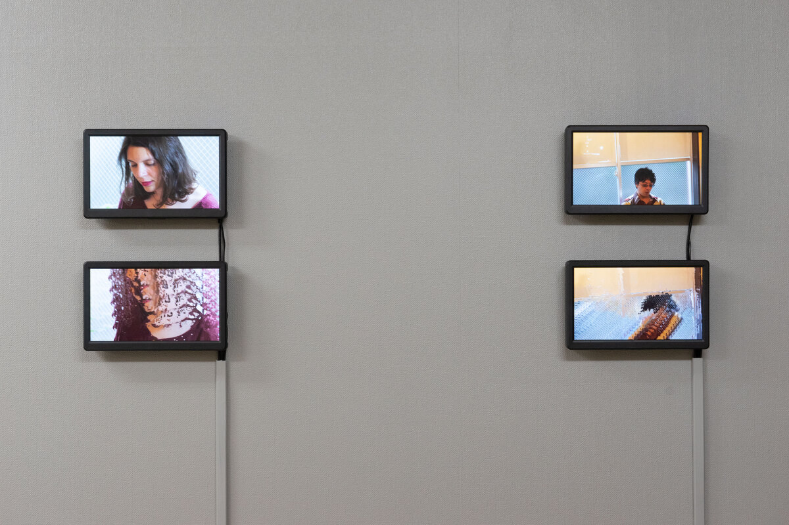
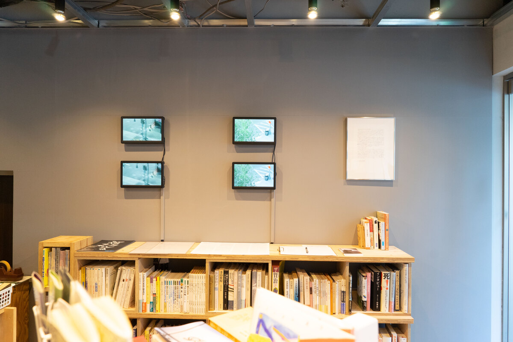
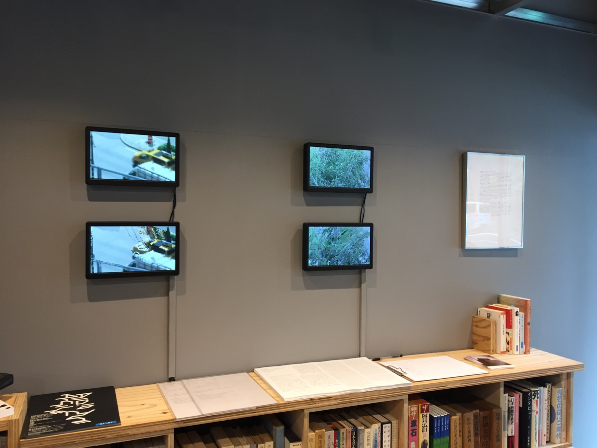
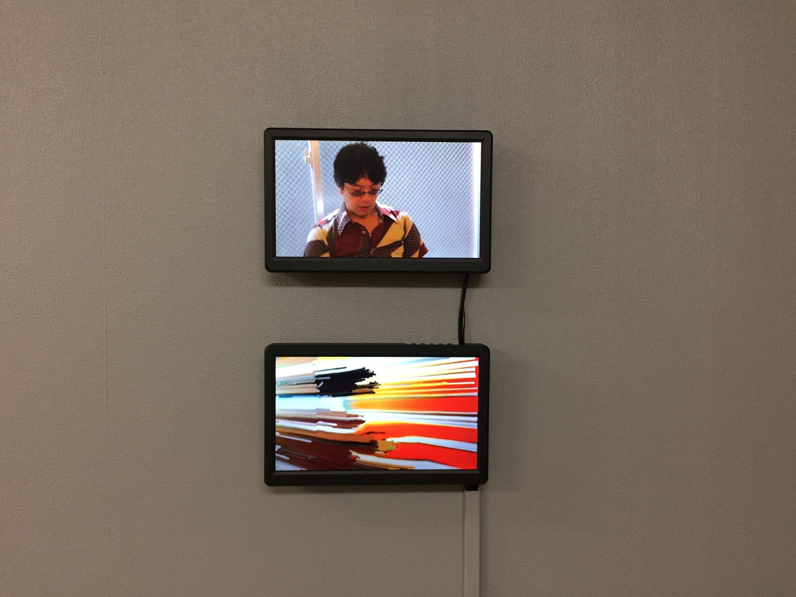
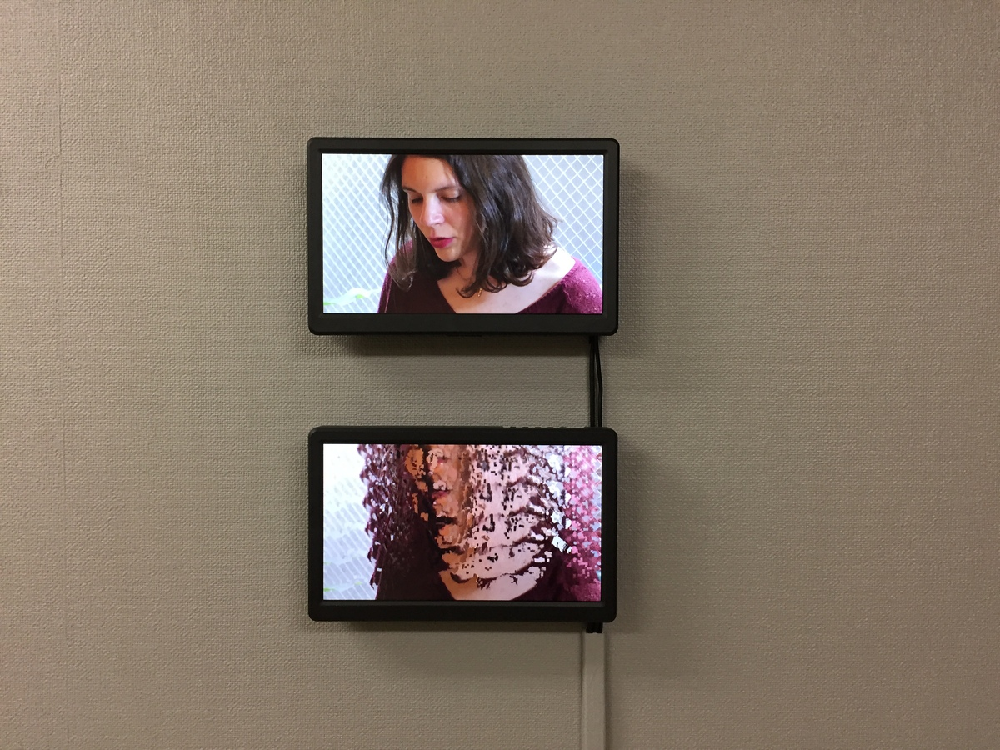
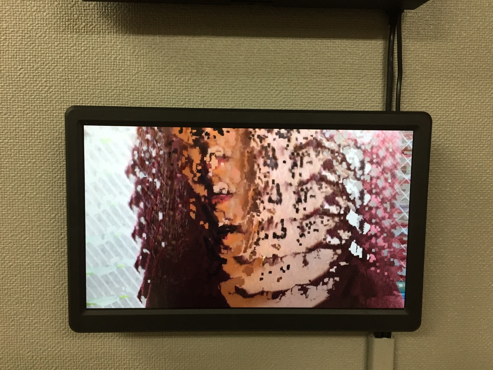

"二個の者が same space ヲ occupy スル (Niko no mono ga same space wo occupy suru)" is a solo show by UCNV, curated by and held in Honkbooks in 2018. The exhibition is mainly an installation which consists of eight synchronized and juxtaposed normal and glitched videos.
    
That different objects, persons, environments or cultures exist in a same place. Four texts are read by four people and they talk about how possible such a situation. In the four synchronized reading, Yoshio Otani, as a man who break the ice, begins to read the following sentence. "Two people cannot occupy a same space. (二個の者が same space ヲ occupy スル訳には行かぬ。)" Though this line which was written by Soseki Natsume claims the wholly natural fact that two different objects cannot exist in the same space and time, I first imagined the computer graphics vision that the two polygon objects are displayed as partially overlapped without the collision detection. In this exhibition, I decided to remove the negation from the sentence and put it as the exhibition title "Two people occupy a same space (二個の者が same space ヲ occupy スル)".
It is said that digital data is formed in the discreteness. To take a video as an example, the continuous time in the real will be divided into frames as mutually isolated images, and the image will be also divided and saved as a finite number of pixels through the sensor of camera. In such data, each frame has no relation to the previous or next frames, and the individual pixel also doesn't find what the adjacent pixels are. The linear space and time in the real world is recorded into the state that is only numerable in integer. It is the characteristic of digital data, the discreteness. And we must witness such discrete information when we see LCD monitors.
The exhibition consists of upper and lower monitors and the upper ones play the normal movie data. When they repeat few frames hundreds of times, the split-second fragment is repeated accurately in the correctly discrete condition. In other words, it is a proof of the right discreteness in the data that the extremely short time can be repeated numerous times endlessly. On the one hand, the lower monitors play the corrupted movies. In the same way that few frames of the corrupted data are repeated hundreds of times, the discreteness will be canceled and the pixels and frames begin to melt like dragging, it becomes to show the not discrete / digital like appearance. Why this comes?
Once the recording device discretizes the information into the computer, the data gets coerced into the consecutiveness which is different from the reality and is based in the order of the digital data. For example, "we should save the two things into one in smaller amount because this pixel and that pixel are equivalent as information." In this situation it can be said that wholly different linearity from the real world now happens. The frames will be saved as only the differences from the previous and next frames, and the pixels will be combined with the other pixels. This is a compression. It is the cause that the lower monitors get melted, and the glitch so reveals the order of the digital data which is done over the discreteness.
As there is the order of the real world in this side, the order of the digital data is in the other side. The monitors exist as media of the two orders. The back-to-back two worlds are displayed there.
UCNV, Sep. 2018